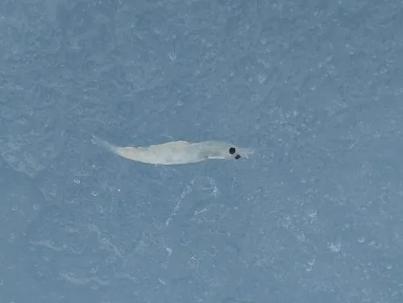

甲壳动物 · 动物界
南极磷虾 Euphausia superba

南大洋中数量惊人的小型甲壳动物，总生物量可达数亿吨，是鲸、企鹅、海豹和鱼类的重要食物来源。
- 分类
- 门节肢动物门纲软甲纲目磷虾目科磷虾科属磷虾属
- 栖息环境
- 南大洋开阔水域与海冰边缘，昼夜垂直洄游
- 地理分布
- 南极洲周边南大洋，呈环极分布
- 保护级别
- 暂无评估；受《南极海洋生物资源养护公约》管理
物种志
南极磷虾体长仅约 4–6 cm，身体透明略带红色，头胸甲和腹节上排列着发光器，能发出蓝绿色生物光；复眼大，胸肢 8 对，密密过滤海水中的浮游植物。身体分节明显，额剑短小。
它常结成巨大虾群，密度可达每立方米数万只；夜间上浮到表层摄食硅藻等浮游植物，白天潜入深水躲避捕食者，这种昼夜垂直迁移是南大洋最壮观的生态现象之一。雌虾一次可产卵数千至上万粒，卵沉入深海孵化。南极磷虾寿命约 6–7 年，总生物量估计达数亿吨，是南大洋食物网的核心，也是碳沉降的重要环节。磷虾渔业受《南极海洋生物资源养护公约》管理，海冰减少和气候变化正威胁其栖息环境。
形态与习性
- 食性滤食硅藻等浮游植物，也捕食小型浮游动物
- 体长约 4–6 cm
- 寿命约 6–7 年
- 繁殖雌虾一次可产卵数千至上万粒，卵沉入深海孵化
- 生物量南极磷虾总生物量估计达数亿吨
- 生态作用南大洋食物网核心，参与碳沉降循环
趣味知识
- 南极磷虾的总生物量可能达数亿吨，是地球上生物量最大的动物之一。
- 它们夜间上浮摄食、白天潜入深海躲避捕食者，称为昼夜垂直迁移。
- 磷虾的发光器能发出蓝绿色光，可能与群体交流和避敌有关。